Given any quantity described by a function, we are often interested in the largest and/or smallest values that quantity attains. For instance, if a function describes the speed of an object, it seems reasonable to want to know the fastest/slowest the object traveled. If a function describes the value of a stock, we might want to know the highest/lowest values the stock attained over the past year. We call such values extreme values.
Definition3.1.1.Extreme Values.
Let \(f\) be defined on an interval \(I\) containing \(c\text{.}\)
\(f(c)\) is the minimum (also, absolute minimum) of \(f\) on \(I\) if \(f(c) \leq f(x)\) for all \(x\) in \(I\text{.}\)
\(f(c)\) is the maximum (also, absolute maximum) of \(f\) on \(I\) if \(f(c) \geq f(x)\) for all \(x\) in \(I\text{.}\)
The maximum and minimum values are the extreme values, or extrema, of \(f\) on \(I\text{.}\)
Consider Figure 3.1.2. The function displayed in Figure 3.1.2.(a) has a maximum, but no minimum, as the interval over which the function is defined is open. In Figure 3.1.2.(b), the function has a minimum, but no maximum; there is a discontinuity in the “natural” place for the maximum to occur. Finally, the function shown in Figure 3.1.2.(c)has both a maximum and a minimum; note that the function is continuous and the interval on which it is defined is closed.
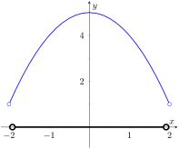(a)
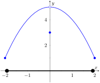(b)
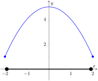(c)
Figure3.1.2.Graphs of functions with and without extreme values
It is possible for discontinuous functions defined on an open interval to have both a maximum and minimum value, but we have just seen examples where they did not. On the other hand, continuous functions on a closed interval always have a maximum and minimum value.
Theorem3.1.3.The Extreme Value Theorem.
Let \(f\) be a continuous function defined on a closed interval \(I=[a,b]\text{.}\) Then \(f\) has both a maximum and minimum value on \(I\text{.}\)
This theorem states that \(f\) has extreme values, but it does not offer any advice about how/where to find these values. The process can seem to be fairly easy, as the next example illustrates. After the example, we will draw on lessons learned to form a more general and powerful method for finding extreme values.
Example3.1.4.Approximating extreme values.
Consider \(f(x) = 2x^3-9x^2\) on \(I=[-1,5]\text{,}\) as graphed in Figure 3.1.5. Approximate the extreme values of \(f\text{.}\)
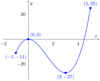
Figure3.1.5.A graph of \(f(x) = 2x^3-9x^2\) as in Example 3.1.4
The graph is drawn in such a way to draw attention to certain points. It certainly seems that the smallest \(y\)-value is \(-27\text{,}\) found when \(x=3\text{.}\) It also seems that the largest \(y\)-value is \(25\text{,}\) found at the endpoint of \(I\text{,}\)\(x=5\text{.}\) We use the word seems, for by the graph alone we cannot be sure the smallest value is not less than \(-27\text{.}\) Since the problem asks for an approximation, we approximate the extreme values to be \(25\) and \(-27\text{.}\)
Notice how the minimum value came at “the bottom of a hill,” and the maximum value came at an endpoint. Also note that while \(0\) is not an extreme value, it would be if we narrowed our interval to \([-1,4]\text{.}\) The idea that the point \((0,0)\) is the location of an extreme value for some interval is important, leading us to a definition of a relative maximum. In short, a “relative max” is a \(y\)-value that's the largest \(y\)-value “nearby.”
Definition3.1.6.Relative Minimum and Relative Maximum.
Let \(f\) be defined on an interval \(I\) containing \(c\text{.}\)
If there is a \(\delta \gt 0\) such that \(f(c) \leq f(x)\) for all \(x\) in \(I\) where \(\abs{x-c}\lt \delta\text{,}\) then \(f(c)\) is a relative minimum of \(f\text{.}\) We also say that \(f\) has a relative minimum at \((c,f(c))\text{.}\)
If there is a \(\delta \gt 0\) such that \(f(c) \geq f(x)\) for all \(x\) in \(I\) where \(\abs{x-c}\lt \delta\text{,}\) then \(f(c)\) is a relative maximum of \(f\text{.}\) We also say that \(f\) has a relative maximum at \((c,f(c))\text{.}\)
The relative maximum and minimum values comprise the relative extrema of \(f\text{.}\)
We briefly practice using these definitions.
Example3.1.7.Approximating relative extrema.
Consider \(f(x) = (3x^4-4x^3-12x^2+5)/5\text{,}\) as shown in Figure 3.1.8. Approximate the relative extrema of \(f\text{.}\) At each of these points, evaluate \(\fp\text{.}\)
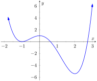
Figure3.1.8.A graph of \(f(x) = (3x^4-4x^3-12x^2+5)/5\) as in Example 3.1.7
We still do not have the tools to exactly find the relative extrema, but the graph does allow us to make reasonable approximations. It seems \(f\) has relative minima at \(x=-1\) and \(x=2\text{,}\) with values of \(f(-1)=0\) and \(f(2) = -5.4\text{.}\) It also seems that \(f\) has a relative maximum at the point \((0,1)\text{.}\)
We approximate the relative minima to be \(0\) and \(-5.4\text{;}\) we approximate the relative maximum to be \(1\text{.}\)
It is straightforward to evaluate \(\fp(x) =\frac{1}{5}\left(12x^3-12x^2-24x\right)\) at \(x=0, 1\) and \(2\text{.}\) In each case, \(\fp(x) = 0\text{.}\)
Example3.1.9.Approximating relative extrema.
Approximate the relative extrema of \(f(x) = (x-1)^{2/3}+2\text{,}\) shown in Figure 3.1.10. At each of these points, evaluate \(\fp\text{.}\)
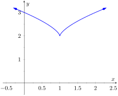
Figure3.1.10.A graph of \(f(x) = (x-1)^{2/3}+2\) as in Example 3.1.9
The figure implies that \(f\) does not have any relative maxima, but has a relative minimum at \((1,2)\text{.}\) In fact, the graph suggests that not only is this point a relative minimum, \(y=f(1)=2\) is the minimum value of the function.
We compute \(\fp(x) = \frac23(x-1)^{-1/3}\text{.}\) When \(x=1\text{,}\)\(\fp\) is undefined.
What can we learn from the previous two examples? We were able to visually approximate relative extrema, and at each such point, the derivative was either \(0\) or it was not defined. This observation holds for all functions, leading to a definition and a theorem.
Definition3.1.11.Critical Numbers and Critical Points.
Let \(f\) be defined at \(c\text{.}\) The value \(c\) is a critical number (or critical value) of \(f\) if \(\fp(c)=0\) or \(\fp(c)\) is not defined.
If \(c\) is a critical number of \(f\text{,}\) then the point \((c,f(c))\) is a critical point of \(f\text{.}\)
Theorem3.1.12.Relative Extrema and Critical Points.
Let a function \(f\) be defined on an open interval \(I\) containing \(c\text{,}\) and let \(f\) have a relative extremum at the point \((c,f(c))\text{.}\) Then \(c\) is a critical number of \(f\text{.}\)
Be careful to understand that this theorem states “Relative extrema on open intervals occur at critical points.” It does not say “All critical numbers produce relative extrema.” For instance, consider \(f(x) = x^3\text{.}\) Since \(\fp(x) = 3x^2\text{,}\) it is straightforward to determine that \(x=0\) is a critical number of \(f\text{.}\) However, \(f\) has no relative extrema, as illustrated in Figure 3.1.13.
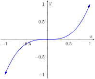
Figure3.1.13.A graph of \(f(x)=x^3\) which has a critical value of \(x=0\text{,}\) but no relative extrema
Theorem 3.1.3 states that a continuous function on a closed interval will have both an absolute maximum and an absolute minimum. Common sense tells us “extrema occur either at the endpoints or somewhere in between.” It is easy to check for extrema at endpoints, but there are infinitely many points to check that are “in between.” Theorem 3.1.12 tells us we need only check at the critical points that are in between the endpoints. We combine these concepts to offer a strategy for finding extrema.
Key Idea3.1.14.Finding Extrema on a Closed Interval.
Let \(f\) be a continuous function defined on a closed interval \([a,b]\text{.}\) To find the maximum and minimum values of \(f\) on \([a,b]\text{:}\)
Evaluate \(f\) at the endpoints \(a\) and \(b\) of the interval.
Find the critical numbers of \(f\) in \([a,b]\text{.}\)
Evaluate \(f\) at each critical number.
The absolute maximum of \(f\) is the largest of these values, and the absolute minimum of \(f\) is the least of these values.
We practice these ideas in the next examples.
Example3.1.15.Finding extreme values.
Find the extreme values of \(f(x) = 2x^3+3x^2-12x\) on \([0,3]\text{,}\) graphed in Figure 3.1.16.
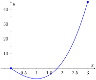
Figure3.1.16.A graph of \(f(x) = 2x^3+3x^2-12x\) on \([0,3]\) as in Example 3.1.15
Next, we find the critical values of \(f\) on \([0,3]\text{.}\)\(\fp(x) = 6x^2+6x-12 = 6(x+2)(x-1)\text{;}\) therefore the critical values of \(f\) are \(x=-2\) and \(x=1\text{.}\) Since \(x=-2\) does not lie in the interval \([0,3]\text{,}\) we ignore it. Evaluating \(f\) at the only critical number in our interval gives: \(f(1) = -7\text{.}\)
Figure 3.1.17 gives \(f\) evaluated at the “important” \(x\) values in \([0,3]\text{.}\) We can easily see the maximum and minimum values of \(f\text{:}\) the maximum value is \(45\) and the minimum value is \(-7\text{.}\)
Table3.1.17.Finding the extreme values of \(f(x)= 2x^3+3x^2-12x\) in Example 3.1.15
\(x\)
\(f(x)\)
\(0\)
\(0\)
\(1\)
\(-7\)
\(3\)
\(45\)
Note that all this was done without the aid of a graph; this work followed an analytic algorithm and did not depend on any visualization. Figure 3.1.16 shows \(f\) and we can confirm our answer, but it is important to understand that these answers can be found without graphical assistance.
We practice again.
Example3.1.18.Finding extreme values.
Find the maximum and minimum values of \(f\) on \([-4,2]\text{,}\) where
Here \(f\) is piecewise-defined, but we can still apply Key Idea 3.1.14 as it is continuous on \([-4,2]\) (one should check to verify that \(\lim\limits_{x\to 0}f(x) =f(0)\)).
We now find the critical numbers of \(f\text{.}\) We have to define \(\fp\) in a piecewise manner; it is
\begin{equation*}
\fp(x) =\begin{cases}2(x-1) \amp x \lt 0 \\ 1 \amp x \gt 0\end{cases}\text{.}
\end{equation*}
Note that while \(f\) is defined for all of \([-4,2]\text{,}\)\(\fp\) is not, as the derivative of \(f\) does not exist when \(x=0\text{.}\) (From the left, the derivative approaches \(-2\text{;}\) from the right the derivative is \(1\text{.}\)) Thus one critical number of \(f\) is \(x=0\text{.}\)
We now set \(\fp(x) = 0\text{.}\) When \(x \gt 0\text{,}\)\(\fp(x)\) is never 0. When \(x\lt 0\text{,}\)\(\fp(x)\) is also never 0, so we find no critical values from setting \(\fp(x)=0\text{.}\)
So we have three important \(x\)-values to consider: \(x= -4, 2\) and \(0\text{.}\) Evaluating \(f\) at each gives, respectively, \(25\text{,}\)\(3\) and \(1\text{,}\) shown in Figure 3.1.19. Thus the absolute minimum of \(f\) is 1, the absolute maximum of \(f\) is \(25\text{.}\) Our answer is confirmed by the graph of \(f\) in Figure 3.1.20.
Table3.1.19.Finding the extreme values of a piecewise-defined function in Example 3.1.18
\(x\)
\(f(x)\)
\(-4\)
\(25\)
\(0\)
\(1\)
\(2\)
\(3\)
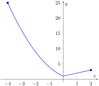Figure3.1.20.A graph of \(f(x)\) on \([-4,2]\) as in Example 3.1.18
Example3.1.21.Finding extreme values.
Find the extrema of \(f(x) = \cos\mathopen{}\left(x^2\right)\mathclose{}\) on \([-2,2]\text{,}\) graphed in Figure 3.1.23.
We again use Key Idea 3.1.14. Evaluating \(f\) at the endpoints of the interval gives: \(f(-2) = f(2) = \cos(4) \approx -0.6536\text{.}\) We now find the critical values of \(f\text{.}\)
Applying the The Chain Rule, we find \(\fp(x) = -2x\sin\mathopen{}\left(x^2\right)\mathclose{}\text{.}\) Set \(\fp(x) = 0\) and solve for \(x\) to find the critical values of \(f\text{.}\)
We have \(\fp(x) = 0\) when \(x = 0\) and when \(\sin\mathopen{}\left(x^2\right)\mathclose{}\text{.}\) In general, \(\sin(t) = 0\) when \(t = \ldots -2\pi, -\pi, 0, \pi, \ldots\) Thus \(\sin\mathopen{}\left(x^2\right)\mathclose{} = 0\) when \(x^2 = 0, \pi, 2\pi, \ldots\) (\(x^2\) is always nonnegative so we ignore \(-\pi\text{,}\) etc.) So \(\sin\mathopen{}\left(x^2\right)\mathclose{}=0\) when \(x= 0, \pm \sqrt{\pi}, \pm\sqrt{2\pi}, \ldots\text{.}\) The only values to fall in the given interval of \([-2,2]\) are \(0\) and \(\pm\sqrt{\pi}\text{,}\) where \(\sqrt{\pi} \approx 1.77\text{.}\)
We again construct a table of important values in Figure 3.1.22. In this example we have five values to consider: \(x= 0, \pm 2, \pm\sqrt{\pi}\text{.}\) From the table it is clear that the maximum value of \(f\) on \([-2,2]\) is \(1\text{;}\) the minimum value is \(-1\text{.}\) The graph in Figure 3.1.23 confirms our results.
Table3.1.22.Finding the extrema of \(f(x)= \cos\mathopen{}\left(x^2\right)\mathclose{}\) in Example 3.1.21
\(x\)
\(f(x)\)
\(-2\)
\(-0.65\)
\(-\sqrt{\pi}\)
\(-1\)
\(0\)
\(1\)
\(\sqrt{\pi}\)
\(-1\)
\(2\)
\(-0.65\)
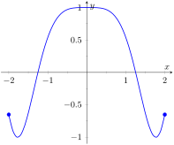Figure3.1.23.A graph of \(f(x)=\cos\mathopen{}\left(x^2\right)\mathclose{}\) on \([-2,2]\) as in Example 3.1.21
We consider one more example.
Example3.1.24.Finding extreme values.
Find the extreme values of \(f(x) = \sqrt{1-x^2}\text{,}\) graphed in Figure 3.1.25(a).
A closed interval is not given, so we find the extreme values of \(f\) on its domain. \(f\) is defined whenever \(1-x^2\geq 0\text{;}\) thus the domain of \(f\) is \([-1,1]\text{.}\) Evaluating \(f\) at either endpoint returns 0.
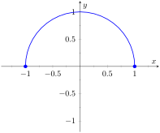Figure3.1.25.A graph of \(f(x)=\sqrt{1-x^2}\) on \([-1,1]\) as in Example 3.1.24
Table3.1.26.Finding the extrema of the half-circle in Example 3.1.24
\(x\)
\(f(x)\)
\(-1\)
\(0\)
\(0\)
\(1\)
\(1\)
\(0\)
Using the The Chain Rule, we find \(\fp(x) = -x\big/\sqrt{1-x^2}\text{.}\) The critical points of \(f\) are found when \(\fp(x) = 0\) or when \(\fp\) is undefined. It is straightforward to find that \(\fp(x) = 0\) when \(x=0\text{,}\) and \(\fp\) is undefined when \(x=\pm 1\text{,}\) the endpoints of the interval (which are in the domain of \(f\text{.}\)) The table of important values is given in Figure 3.1.26. The maximum value is \(1\text{,}\) and the minimum value is \(0\text{.}\)
We have seen that continuous functions on closed intervals always have a maximum and minimum value, and we have also developed a technique to find these values. In Section 3.2, we further our study of the information we can glean from “nice” functions with the Mean Value Theorem. On a closed interval, we can find the average rate of change of a function (as we did at the beginning of Chapter 2). We will see that differentiable functions always have a point at which their instantaneous rate of change is same as the average rate of change. This is surprisingly useful, as we'll see.
ExercisesExercises
Terms and Concepts
1.
Describe what an “extreme value” of a function is in your own words.
2.
Sketch the graph of a function \(f\) on \((-1,1)\) that has both a maximum and minimum value.
3.
Describe the difference between absolute and relative maxima in your own words.
4.
Sketch the graph of a function \(f\) where \(f\) has a relative maximum at \(x=1\) and \(\fp(1)\) is undefined.
5.
True
False
If \(c\) is a critical value of a function \(f\text{,}\) then \(f\) has either a relative maximum or relative minimum at \(x=c\text{.}\)
6.
Fill in the blanks: The critical points of a function \(f\) are found where \(\fp(x)\) is equal to or where \(\fp(x)\) is .
Problems
Exercise Group.
Identify each of the marked points as being an absolute maximum or minimum, a relative maximum or minimum, or none of the above.
7.
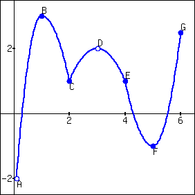
8.
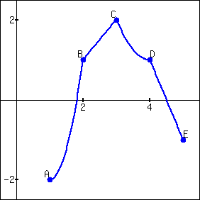
Exercise Group.
Evaluate \(\fp(x)\) at the points indicated in the graph.